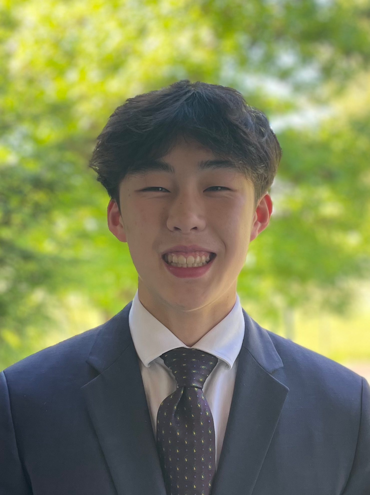

Caleb Hu

chu552@cs.washington.edu · (425) 761-4686 · LinkedIn · Github
Education
University of Washington, Seattle, WA
Expected Graduation: Spring 2028
Bachelor of Science in Computer Science
- GPA: 3.93/4.00
- Relevant Coursework: Linear Algebra, Introduction to Computer Science I, II, III
Skills
- Programming Languages: Proficient in Python, Java, HTML; Familiar with JS, CSS, React.js
- Frameworks: Familiar with Django, Flask, Firebase
- Languages: Limited working proficiency in Spanish
Experience
UW cseed, Seattle, WA
10/2024 - 11/2024
Buildspace Fellow
- In this 6-week program, worked as member of project team that developed MVP of mobile app aiming to generate business for local hair stylists and salons in Seattle area.
- Used React Native for frontend and Firebase for backend
UW Medicine, Seattle, WA
06/2024 - 10/2024
Undergraduate Research Assistant, Kang Lab
- Assisted in applying language model BERTopic to analyze research topics and National Cancer Institute (NCI) funding trends across various medical fields.
Code Ninjas, Newcastle, WA
06/2023 - 07/2024
Coding Instructor
- Taught children ages 5-14 programming in Scratch, Lua, JavaScript, and Python.
- Worked as summer camp counselor assisting children in various projects.
Technical Projects
StyleSphere
10/2024 - 11/2024
- MVP of app developed through UW cseed buildspace.
- Incorporated swiping feature such that local hair stylist and salon accounts were continuously displayed.
- Used React.js for frontend and Firebase for backend
Extracurricular/Community Involvement
St. Mary's On-the-Lake Peace and Spirituality Center, Bellevue, WA
04/2023 - 12/2024
Cellist
- Volunteer as cellist most Sundays for St. Mary’s Catholic Mass.
- Performed various Catholic and Christian hymns.